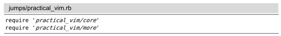

）。
）。技巧57跳转到光标下的文件
Vim会把文档中的文件名当成一个超链接。在进行了正确的配置后，我们就可以用gf命令跳转到光标下的文件了。
我们将用 jumps 目录作为演示，你可以在随本书发布的源码中找到该目录。它包含如下目录树结构：
我们先在 shell 里切换到 jumps 目录，然后再启动 Vim。在本例中，我建议用 -u NONE -N 参数启动 Vim，以确保 Vim 在启动时不加载任何插件：
➾$ cd code/jumps
➾$ vim -u NONE -N practical_vim.rb
practical_vim.rb文件只是简单地包含 core.rb 及 more.rb文件：

如果能快速查看 require 指示符所指定的文件的内容，岂不是很棒吗？这正是Vim 的gf命令要实现的功能，你可以把这个命令想成“go to file”（参见:h gf）。
让我们试一下该命令。先把光标放在字符串'practical_vim/core'的某个位置上（例如，按fp快速移到该字符串上），如果现在尝试执行gf命令的话，会遇到下面的错误“E447:在路径中找不到文件‘practical_vim/core’”。
就是说，Vim 会尝试打开名为practical_vim/core的文件，并报告该文件不存在。其实，在目录中是有一个名为practical_vim/core.rb的文件的（留意一下文件的扩展名）。因此，我们需要以某种方法告诉 Vim ，让它在尝试打开文件前，对光标下的文件路径进行修改，为之加上.rb扩展名。我们可以用‘suffixesadd’选项做到这一点。
指定文件的扩展名
‘suffixesadd’选项允许我们指定一个或多个文件扩展名，当 Vim 用gf命令搜寻文件名时，会尝试使用这些扩展名（参见:h 'suffixesadd'）。用下面的命令可以设置此选项：
➾ :set suffixesadd+=.rb
现在如果我们用gf命令的话，Vim就会直接跳转到光标下的文件路径。试着用它打开more.rb文件，然后在此文件中再找到其他一些require指令，随便挑一个用gf命令打开。
每次用gf命令时，Vim 都会在跳转列表中增添一条记录，因此我们总是可以用<C-o>命令返回原处（参见技巧55）。在本例中，按一次<C-o> 会让我们回到more.rb，再按一次则会让我们回到practical_vim.rb中。
指定要搜寻的目录
在本例中，每个require语句所引用的文件都位于工作目录的相对路径中。但是，如果我们引用了第三方库所提供的功能，比如说rubygem，那该怎么办？
这正是'path'选项的用处 (参见:h 'path'），我们可以把它配置成一个以逗号分隔的目录列表。当使用gf命令时，Vim 会检查'path'目录列表中的每个目录，看该目录中是否包含一个匹配光标下文本的文件名。'path'设置也会用于:find命令，我们已经在技巧42中介绍过该命令。
用下面这条命令可以查看'path'选项的值：
➾:set path?
《 path=.,/usr/include,,
在此设置中，.代表当前文件所在的目录，而空字符串（由两个连着的逗号界定）则代表工作目录。上述缺省值对于简单的例子可以工作得很好，但对于较大的工程来说，我们可能会想在'path'设置中包含更多的目录。
例如，如果'path'能够包含一个 Ruby工程所用的全部 rubygems 的目录，那就会非常有用。因为这样一来，我们就可以用gf命令打开任何require语句所引用的模块。如果你想找一种自动解决方案的话，可以看一下 Tim Pope 的bundler.vim 插件(3)，它会使用工程的Gemfile来自动生成'path'设置。
结论
在本节一开始时，我建议在启动 Vim 时禁用所有插件。这是因为 Vim在发布时通常都附带一个 Ruby文件类型插件，此插件会为我们设置'suffixesadd'和'path'选项。如果你需要用 Ruby 完成大量的工作，那么我建议你从 github 上下载最新版本的文件类型插件，因为该插件的更新很频繁。(4)
'suffixesadd' 和'path'选项可以针对每个缓冲区进行设置，因此对不同的文件类型可以设置不同的值。除 Ruby 以外，Vim 在发布时也附带了很多其他编程语言的文件类型插件。因此在实际应用中，你不会自己经常设置这两个选项。即便如此，我们也值得花点时间理解gf命令是如何工作的。这条命令能让文档中每个文件路径都像超链接那样工作，使我们浏览代码变得更容易。
<C-]>命令的作用也类似。它也需要进行一些配置（在技巧102中讨论），然而一旦正确配置好，它就允许我们从函数调用的地方直接跳到该函数定义的地方。移步技巧103可以看到一个实例。
跳转列表和改变列表如同“面包屑小径”一样，它们允许我们沿原路返回。而gf和<C-]>命令则像是“虫洞”，它把我们从代码的一个地方传送到另一个地方。